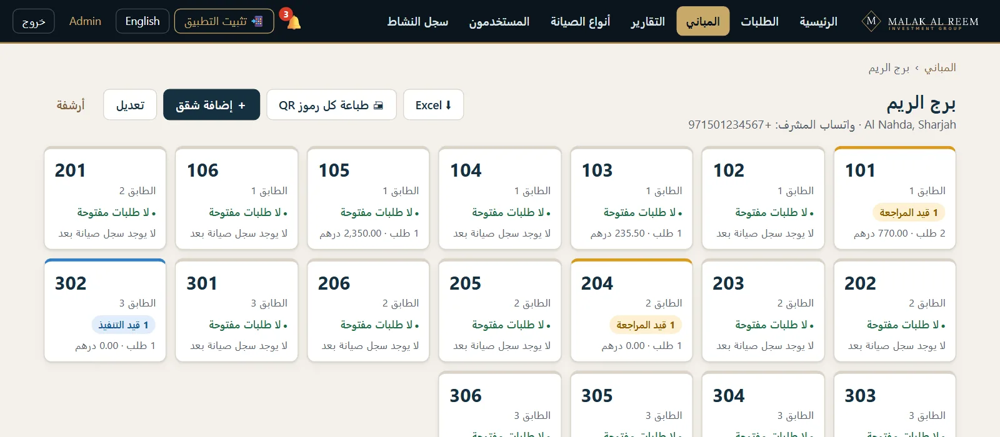
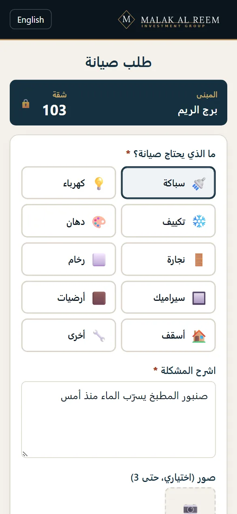
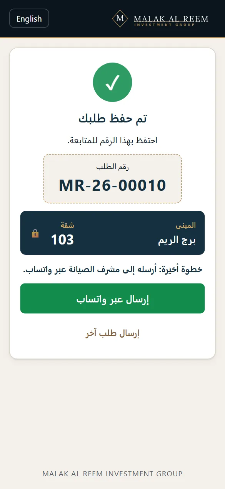
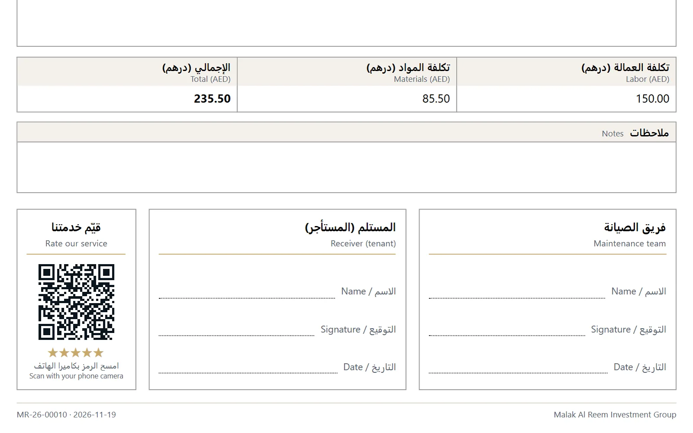
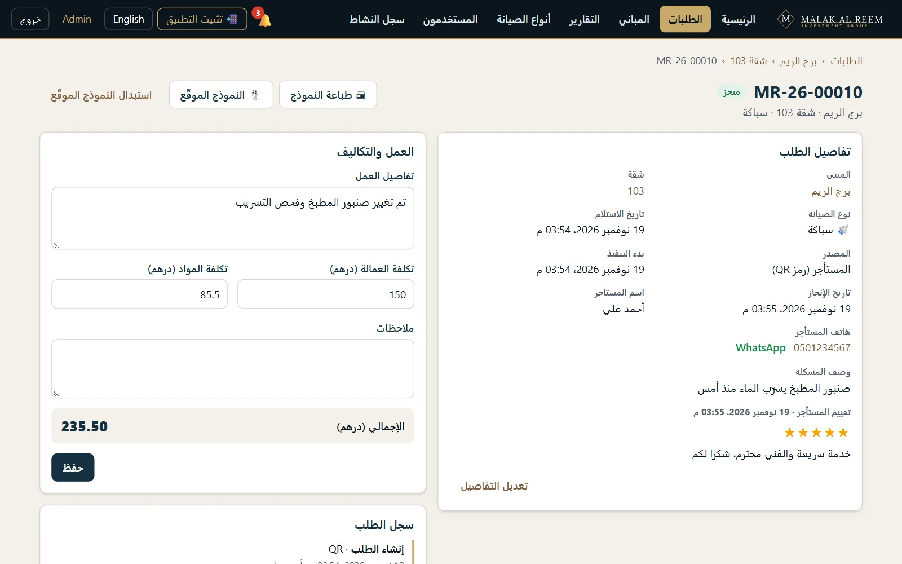
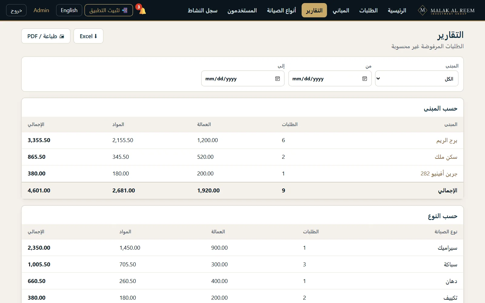
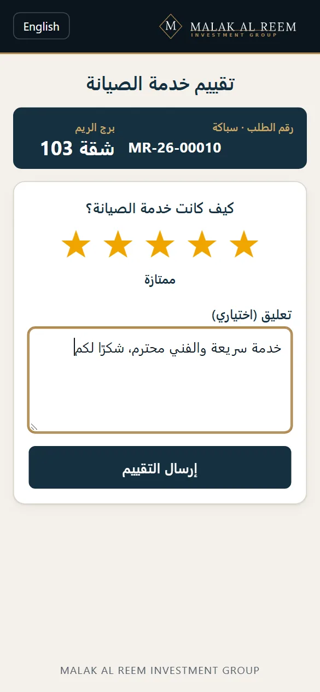
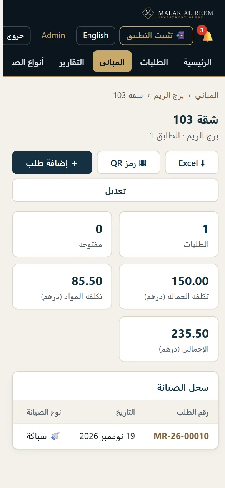

المشكلة
مجموعة استثمارية تؤجّر شققاً في ست بنايات سكنية في دبي والشارقة. يسرّب صنبور أو يتوقف مكيّف، فيتصل المستأجر أو يراسل من يعرفه. لم يكن شيء يسجّل ماذا أُنجز في أي شقة، ومن أنجزه، وبكم، ولم يكن ممكناً جمع تكلفة صيانة مبنى.
المستأجرون بلا حسابات ولا ينبغي أن يحتاجوا إليها، والمشرفون يعملون من هواتفهم، وكان المطلوب واضحاً في التكلفة: لا شيء يُدفع كل شهر.
ما بنيته
رمز QR في كل شقة
لكل شقة ملصق عليه رمز QR، وخلفه رابط عشوائي بطول 192 بت، فلا يمكن تخمين رابط شقة من رابط أخرى، ويأتي المبنى والشقة في النموذج من هذا الرابط على الخادم لا من الصفحة. تُطبع الملصقات ثمانية في كل صفحة A4 بالعربية والإنجليزية، والرمز الجديد يوقف الملصق القديم فوراً، لحين يخرج مستأجر من شقته.
يختار المستأجر نوع العمل ويصف المشكلة ويمكنه إرفاق حتى ثلاث صور، ثم يرسل. يُحفظ الطلب أولاً برقم مرجعي، وبعدها فقط يُفتح واتساب على رقم المشرف والرسالة مكتوبة وجاهزة للإرسال. يعتمد ذلك على رابط المحادثة العادي في واتساب، فلا حساب أعمال يحتاج إلى توثيق ولا رسوم على كل رسالة، والمستأجر الذي لا يضغط «إرسال» يكون قد سجّل طلبه رغم ذلك.


من الاستلام إلى الإنجاز
ينتقل الطلب من «قيد المراجعة» إلى «قيد التنفيذ» حين يُرسل الفريق، وإلى «منجز» حين يُعتمد العمل، ويُرفض الطلب المكرر أو الوهمي مع ذكر السبب. ويُحفظ مع كل تغيير من قام به ومتى، ولا يرى المشرف إلا المباني التي أسندها إليه المسؤول.
يطبع الفريق نموذج A4 للطلب باللغتين، ويوقّعه الفريق والمستأجر على الورق. ولا يُغلق الطلب حتى يعود هذا النموذج: ملف PDF حتى 8 ميغابايت، أو صورة من الهاتف. تُفحص الملفات بمحتواها لا باسمها، وتُحفظ في قاعدة البيانات على أجزاء من 1 ميغابايت بدل مخزن ملفات مدفوع، ولا يراها إلا من يحق له رؤية ذلك المبنى.

الخانة الأخيرة صوت المستأجر. يفتح مسحها صفحة فيها خمس نجوم وتعليق، مرة واحدة لكل طلب، ويُحفظ التقييم على الطلب وفي سجله وفي سجل الشقة.

التكاليف والتقارير
يُدخل المسؤول تكلفة العمالة والمواد لكل طلب، ويكتب المشرفون تفاصيل العمل دون أن يغيّروا المبالغ. وتعرض كل شقة سجلها الكامل ومجاميعها مع تنزيل Excel، ويصدّر المبنى كل طلباته دفعة واحدة، وتوزّع صفحة التقارير التكلفة حسب المبنى ونوع العمل والشقة لأي فترة، في Excel أو مطبوعة. ويمكن إدخال الأعمال السابقة للنظام بتاريخها القديم، فيبدأ السجل من بدايته الحقيقية.

للفريق
جرس يعدّ الطلبات الجديدة داخل الموقع، وتنبيه Push يصل إلى الهاتف أو الحاسوب حتى والموقع مغلق. لا يحمل التنبيه أي بيانات: يوقظ الجهاز فقط، فيسأل الموقع عن الجديد، فلا يمر شيء عن الطلب عبر خدمة التنبيهات. ويُثبَّت الموقع كتطبيق على الحاسوب وأندرويد وiPhone، وتعرض صفحة المستخدمين من هو متصل الآن.
ويجيب مساعد عن 40 سؤالاً جاهزاً عن النظام باللغتين، يطابقها في المتصفح دون أي خدمة خارجية، ويحفظ للمسؤول الأسئلة التي لم يجد لها جواباً، وزر واتساب يوصل إلى المسؤول لما سواها. تُجزَّأ كلمات المرور بـ PBKDF2-SHA256، والجلسة ملف تعريف HttpOnly وSameSite=Strict، وكل كتابة تحتاج ترويسة من المصدر نفسه، ومحاولات الدخول والنموذج العام محدودة لكل عنوان ولكل شقة.


النتيجة
يعمل على الخطة المجانية من Cloudflare، بـ Worker وقاعدة D1 ولا شيء آخر يُدفع. جاءت البنايات الست الحقيقية وشققها الـ 556 من الوحدات المحفوظة أصلاً كمتغيرات منتجات في Odoo، كل شقة بنوعها، وتُركت المحلات وغرف الخدمات. و106 فحوص للواجهة البرمجية تغطي الدخول والصلاحيات لكل مبنى وخطوات الطلب ورفع الملفات والتقييم والتنبيهات.
ومعه دليل استخدام من 7 صفحات بالعربية والإنجليزية، وفيديو قصير بكل لغة. والصور هنا من نسخة محلية ببيانات تجريبية.